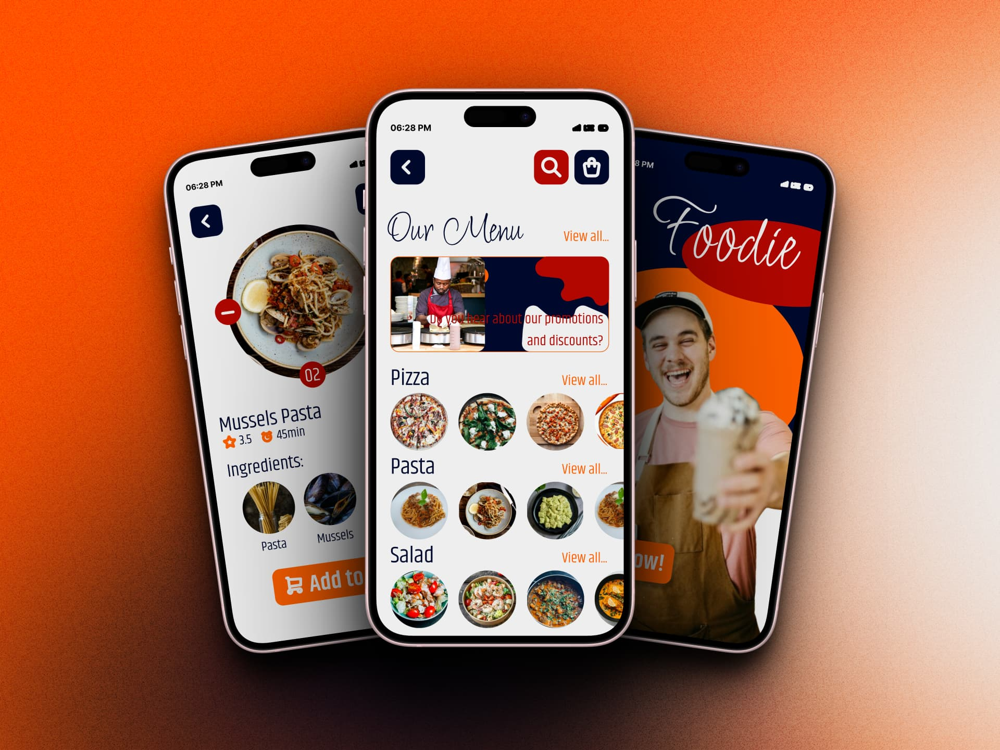
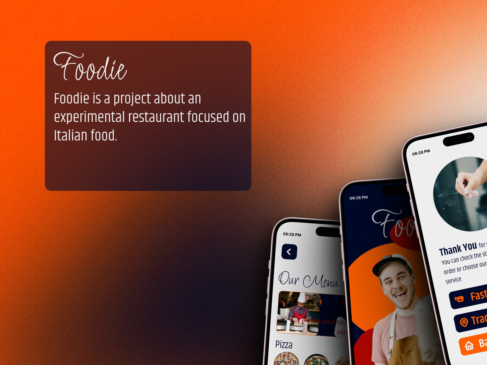
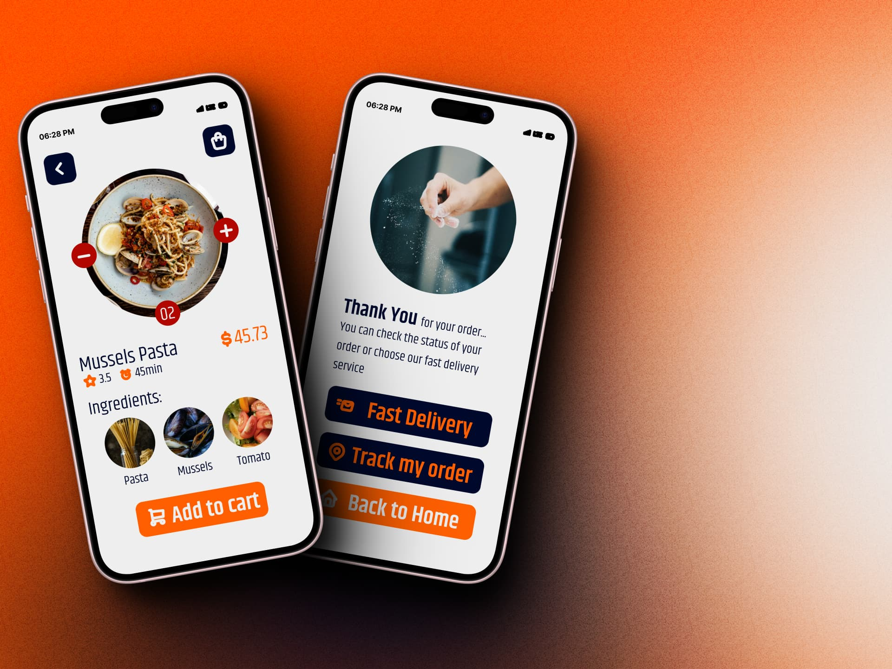
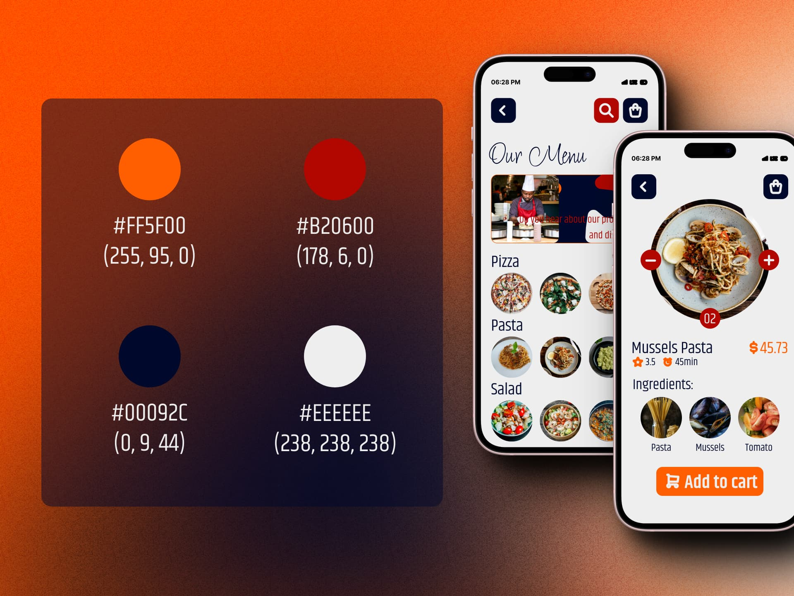
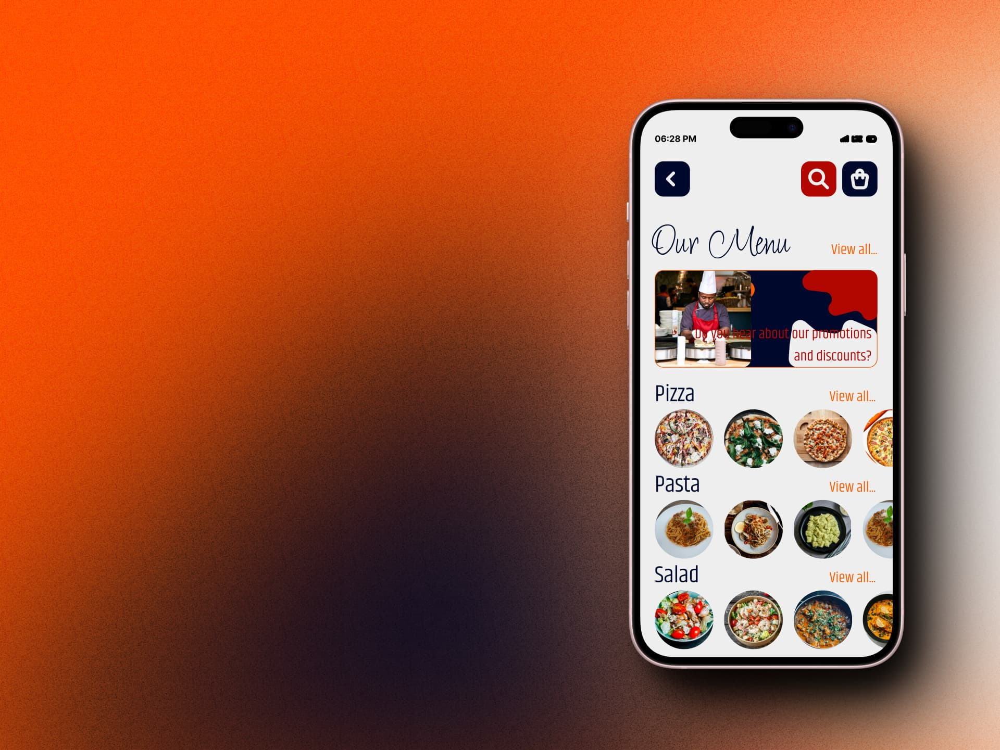

Foodie Project
Web Design | UI/UX Design | Interface Design | Mockups & Wireframes
Foodie Project is a free project on the interface of a food delivery app.
General information:
- Project Name: Foodie
- Application Type: Mobile app to order food.
- Key Differentiator:
1. Users can review both the order status and the composition of the dishes.
2. Focuses on health, providing information on calorie balance.
3. Warm colors to generate closeness with customers.
Project Objectives:
1. Facilitate the Order Process:
- Create an intuitive interface so that users can order food easily.
- Highlight the speed and convenience of Foodie.
2. Transparency in Food:
- Allow users to see the composition of dishes before order.
- Show ingredients, allergens and nutritional values.
3. Focus on Health:
- Highlight the importance of health.
- Provide a calorie balance for each plate.
4. Attractive Design:
- Use warm colors, such as shades of orange, yellow or red to generate closeness and appetite.
- Clean and attractive design.
Interface Content:
1. Home Page:
- Welcome to Foodie with a brief description.
- Buttons to explore menus and place orders.
2. Menus and Dishes:
- Food categories (breakfast, lunch, dinner, etc.).
- List of dishes with images, descriptions and prices.
- Option to customize ingredients.
3. Plate Details:
- When selecting a dish, show:
- Detailed composition (ingredients, allergens).
- Calorie balance.
- Nutritional value.
4. Order Status:
- Page to track order status (in preparation, on the way, delivered).
- Real-time notifications.
5. User Profile:
- Orders history.
- Food preferences (vegetarian, vegan, gluten-free, etc.).
Design and style:
1. Colors:
- Background in warm tones.
- Buttons and elements highlighted in vibrant colors.
2. Iconography:
- Use icons related to food and health.
The principal software used was Figma and for the iconography the Tabler Icons pack was used.
Photographs Used:
shakti-rajpurohit-FvOGEAL2GPE-unsplash by Shakti Rajpurohit
clark-douglas-17ZU9BPy_Q4-unsplash by Clark Douglas
homescreenify-sA3wymYqyaI-unsplash by Homescreenify
julia-karnavusha-zWdBRmh8Gv8-unsplash by Julia Karnavusha
shark-ovski-DQbE7rhTC8w-unsplash by shark ovski
alina-chernysheva-oj2hBf5TOFM-unsplash by Alina Chernysheva
ryan-concepcion-w_z0RJCSBiE-unsplash by Ryan Concepcion
khloe-arledge-ND3edEmzcdQ-unsplash by khloe arledge
sanket-shah-eEWlcfydzQ4-unsplash by Sanket Shah
saahil-khatkhate-kfDsMDyX1K0-unsplash by Saahil Khatkhate
shourav-sheikh-xLfqx4Psf94-unsplash by Shourav Sheikh
saundarya-srinivasan-60nzTP7_hMQ-unsplash by Saundarya Srinivasan
elevate-iv6yNy7oBqQ-unsplash by Elevate
foad-roshan-Y6OgisiGBjM-unsplash by Foad Roshan
travis-grossen-AXDTTuh-0UI-unsplash by Travis Grossen
max-komthongvijit-_RwtD1MrUrw-unsplash by Max Komthongvijit
vince-fleming-7qileFwJEWo-unsplash by Vince Fleming
victoria-aleksandrova-M-XihC4kP9g-unsplash by Victoria Aleksandrova
gil-ndjouwou-Bevp7bK4V-4-unsplash by Gil Ndjouwou
heather-gill-SJ7uORconic-unsplash by Heather Gill
They can all be found on Unsplash, many thanks to the artists.





